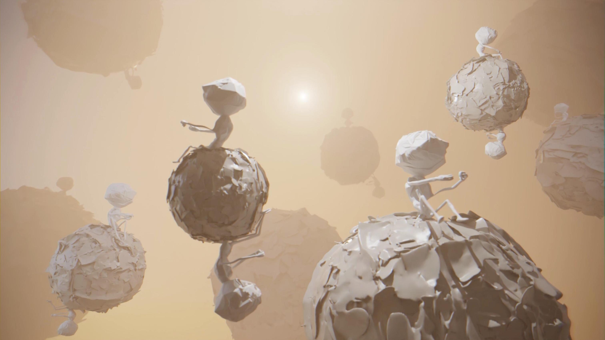
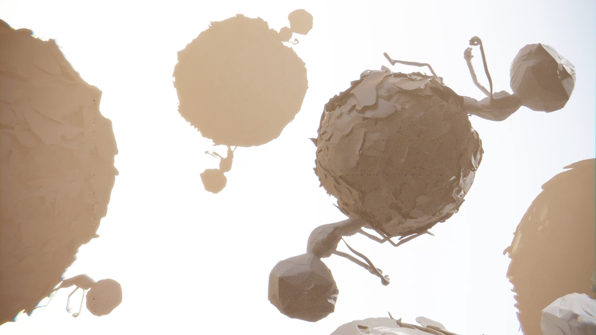
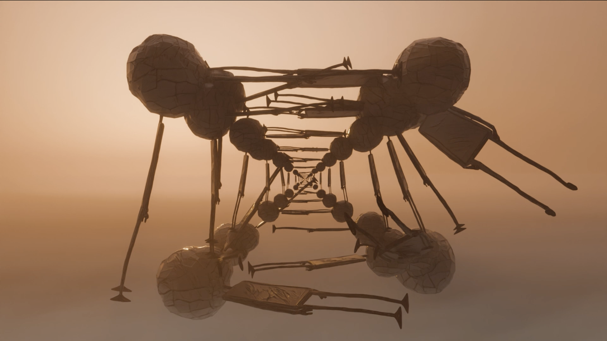
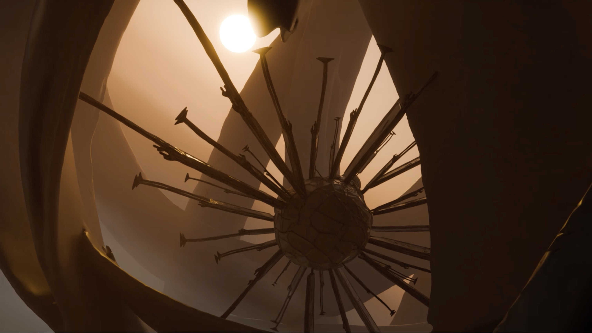
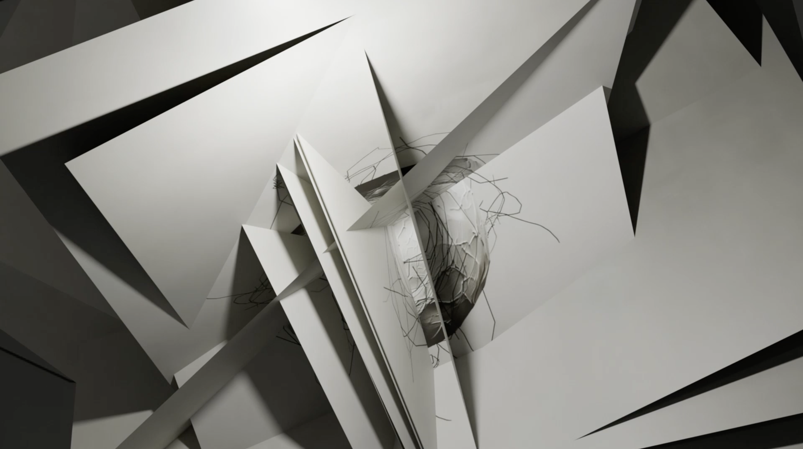
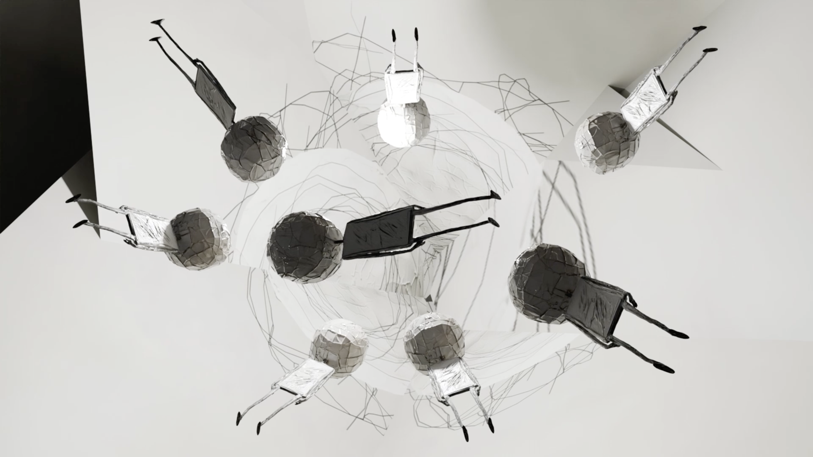
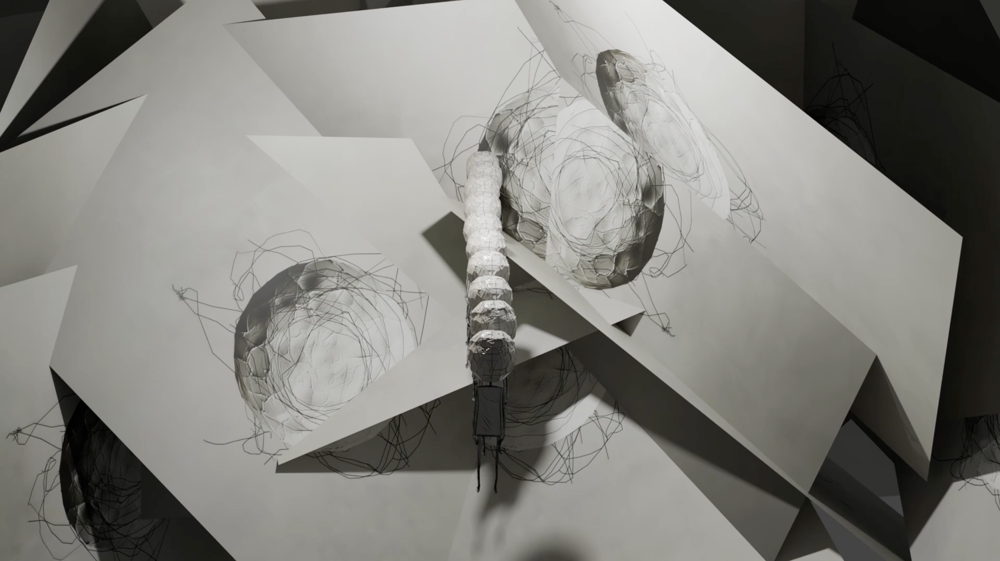
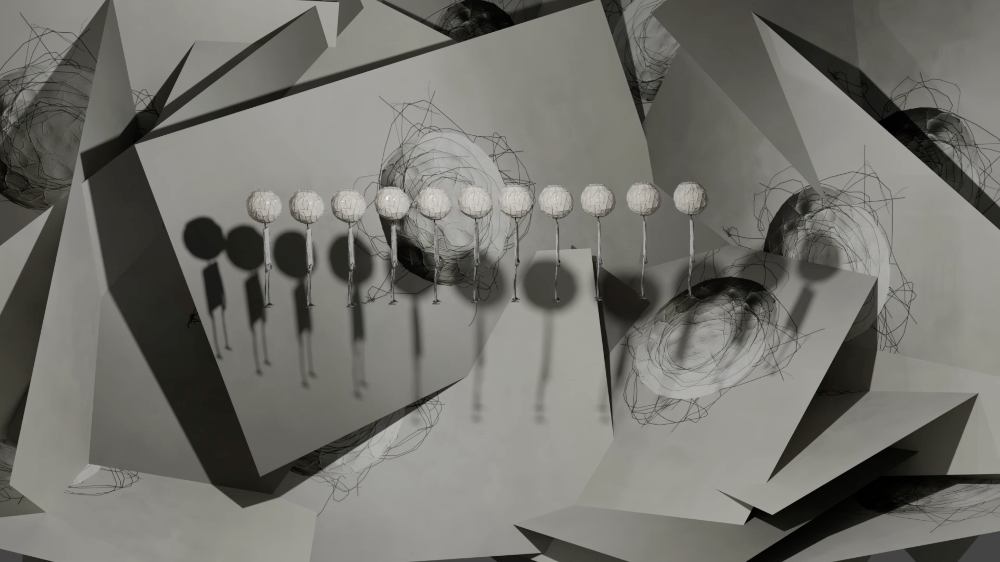
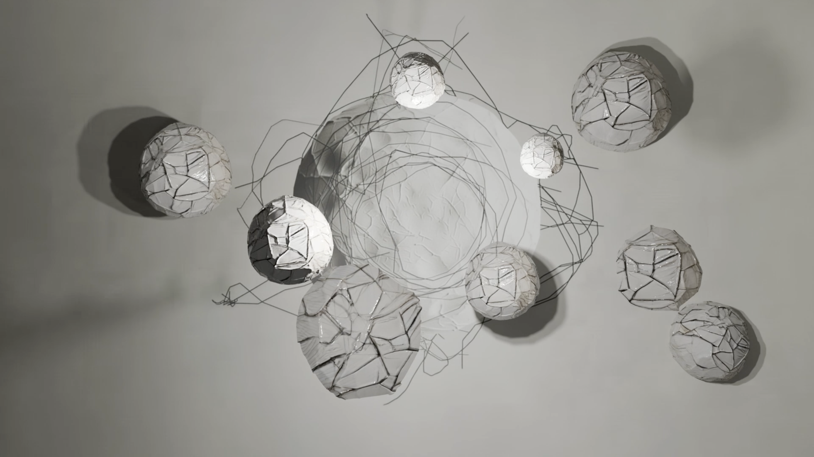

This is an experimental animation series centered around the dot.
As the smallest visible unit in a two-dimensional world, the dot embodies the notion of “trace.” I continuously shift dimensional perspectives, moving between two and three dimensions. A tiny dot may become a dashed line, a sphere, a cylinder from a top view, or a ring from the side. The boundaries between dimensions are stretched, and space is twisted and unfolded in unexpected ways.
Simultaneously, the subject of narration remains in constant flux. Inspired by the non-linear narrative structures of contemporary fiction, I explore how shifts in perspective can alter voice and storytelling within the medium of video. The narrative unfolds like a continuous encounter—each meeting bringing surprise or unease. Visually, this translates into a sense of wonder and astonishment. I aim to construct a disorienting perception of time and space, inviting the viewer to join this fluid, transformative journey and experience the tension between dimensions.